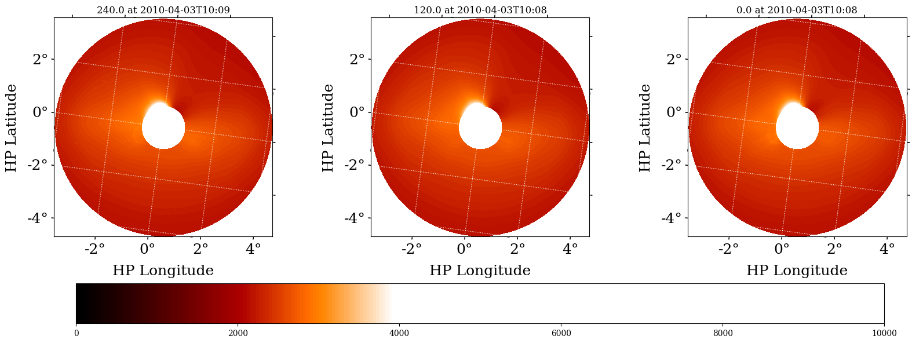
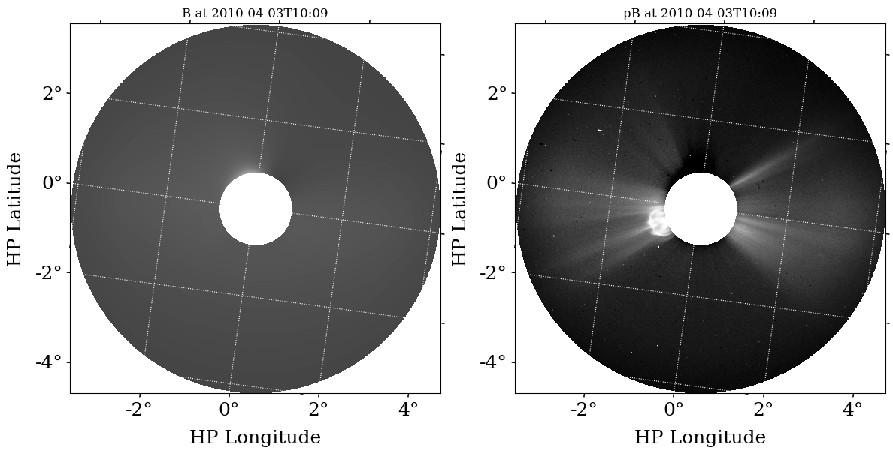
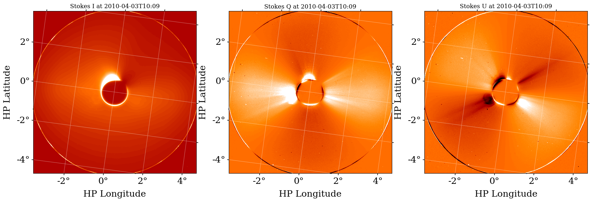

Examples#
solpolpy is a solar polarization resolver based on Deforest et al. 2022.
It converts between various polarization formats, e.g. from the native three triple version from observations (also known as the MZP convention) to polarization brightness (pB) and total polarization (B), Stokes I, Q and U, etc. An example of transforming the polarization basis using the LASCO/C2 images is shown in the image below. The images at polarizing angles of -60°, 0° and +60° is shown in the top panel as Bm, Bz and Bp respectively. The bottom panel shows the output of the solpolpy to
convert the initial basis to the Stokes I, Q and U.
solpolpy is invoked using a simple interface:output = sp.resolve(input_data, out_system) where the input_data parameter is an appropriate NDCollection (a collection of SunPy NDCubes), such as a triplet of polarized images. out_system is the desired output polarization state (MZP, BtBr, Stokes, BpB, Bp3, or Bthp). It has a utility function to load data into the expected NDCollection format called load_data. There is also a
plotting utility to plot any collection called plot_collection.
Polarization systems handled by solpolpy#
Minus, Zero, Plus (MZP): Triplet of images taken at -60°, 0°, and +60° polarizing angles.
Tangential and Radial Brightness (BtBr): Pair of images with polarization along the tangential and radial direction with respect to the Sun respectively.
Stokes (Stokes): Total (unpolarized) brightness (I), polarized brightness along vertical and horizontal axes (Q) and polarized brightness along ±45° (U) .
Brightness, polarized Brightness (BpB): Total (unpolarized) brightness and ‘excess polarized’ brightness images pair respectively.
Brightness, polarized Brightness, polarized Brightness orthogonal (Bp3): Analogous to Stokes I, Q and U, but rotates with α around the Sun unlike the later with fixed frame of reference of the instrument.
Brightness, theta, phi (Bthp): System with total (unpolarized) brightness, angle and degree of polarization.
Import Data#
Import an example STEREO polarzation triplet dataset from 2010-04-03 at 10:10 UT. These can be substituted with any file paths you have.
[1]:
# Import packages
import glob
import matplotlib.pyplot as plt
from matplotlib import rcParams
from solpolpy import resolve, load_data, plot_collection, get_colormap_str
rcParams['font.family'] = 'serif'
stereo_paths = glob.glob('data/stereo*.fts')
Use the solpolpy load_data function to import data from FITS files. Alternatively, you can pass FITS filenames to the resolve method showcased later. However, you have more control and can visualize the inputs if you use load_data. In this case, we specify use_instrument_mask=True because we want to load the data with the solpolpy-provided instrument mask.
[2]:
stereo_collection = load_data(stereo_paths, use_instrument_mask=True)
WARNING: FITSFixedWarning: CROTA = 7.7105675 /
keyword looks very much like CROTAn but isn't. [astropy.wcs.wcs]
WARNING: FITSFixedWarning: 'datfix' made the change 'Set MJD-OBS to 55289.423090 from DATE-OBS.
Set MJD-AVG to 55289.423218 from DATE-AVG.
Set MJD-END to 55289.423345 from DATE-END'. [astropy.wcs.wcs]
WARNING: FITSFixedWarning: CROTA = 7.7106929 /
keyword looks very much like CROTAn but isn't. [astropy.wcs.wcs]
WARNING: FITSFixedWarning: 'datfix' made the change 'Set MJD-OBS to 55289.422743 from DATE-OBS.
Set MJD-AVG to 55289.422870 from DATE-AVG.
Set MJD-END to 55289.422998 from DATE-END'. [astropy.wcs.wcs]
WARNING: FITSFixedWarning: CROTA = 7.7109408 /
keyword looks very much like CROTAn but isn't. [astropy.wcs.wcs]
WARNING: FITSFixedWarning: 'datfix' made the change 'Set MJD-OBS to 55289.422396 from DATE-OBS.
Set MJD-AVG to 55289.422523 from DATE-AVG.
Set MJD-END to 55289.422651 from DATE-END'. [astropy.wcs.wcs]
stereo_collection is an NDCollection. If you’re not familiar with these, please see the NDCube documentation (http://docs.sunpy.org/projects/ndcube/). They’re essentially data containers that couple multiple aspects of data together, e.g. the world coordinate system (WCS), the data, uncertainty, metadata.
For any collection, you can use the .keys() method to see the keys that solpolpy loaded.
[3]:
stereo_collection.keys()
[3]:
dict_keys(['angle_1', 'angle_2', 'angle_3'])
In this case, we can see they are numbered angles. If we want to know more, we can look at the appropriate cube:
[4]:
stereo_collection['angle_1']
[4]:
<ndcube.ndcube.NDCube object at 0x10765a110>
NDCube
------
Dimensions: [2048. 2048.] pix
Physical Types of Axes: [('custom:pos.helioprojective.lon', 'custom:pos.helioprojective.lat'), ('custom:pos.helioprojective.lon', 'custom:pos.helioprojective.lat')]
Unit: None
Data Type: uint16
It’s particularly helpful to look at the “POLAR” keyword that solpolpy adds to metadata. That tracks what kind of file we’re looking at. In this case it returns 240.0 because we’re looking at an image with a polarizer of 240.0 degrees.
[5]:
stereo_collection['angle_1'].meta['POLAR']
[5]:
240.0
You can also inspect the entire FITS header of the file as it was loaded.
[6]:
stereo_collection['angle_1'].meta[:10] # we put [:10] just so we look at the first 10 lines of the meta... it's long!
[6]:
SIMPLE = T / Written by IDL: Mon Apr 5 17:12:11 2010
BITPIX = 16 /
NAXIS = 2 /
NAXIS1 = 2048 /
NAXIS2 = 2048 /
EXTEND = T /
DATE-OBS= '2010-04-03T10:09:15.006' /
FILEORIG= 'A4030234.411' /
SEB_PROG= 'NORMAL ' /
SYNC = T /
View the STEREO triplet input data#
solpolpy provides two helpful functions for viewing data: - get_colormap_str determines the appropriate colormap string to use for the dataset. - plot_collection visualizes the collection. There are many optional arguments to this function. We suggest you look at the documentation’s help to see them all.
[7]:
help(plot_collection)
Help on function plot_collection in module solpolpy.plotting:
plot_collection(collection: ndcube.ndcollection.NDCollection, figsize=(8, 8), show_colorbar=False, lat_ticks=None, lon_ticks=None, major_formatter='dd', xlabel='HP Longitude', ylabel='HP Latitude', vmin=None, vmax=None, cmap='Greys_r', ignore_alpha=True, fontsize=18)
Plot a solpolpy NDCollection input or output
Parameters
----------
collection : NDCollection
collection to visualize
figsize : Tuple[float, float]
figure size according to Matplotlib
show_colorbar : bool
whether to show a colorbar
lat_ticks : Optional[np.ndarray]
if provided, shows as the tick marks for latitude. default values used otherwise.
lon_ticks : Optional[np.ndarray]
if provided, shows as the tick marks for longitude. default values used otherwise.
major_formatter : str
the formatter for major tickmarks as specified by Matplotlib
xlabel : str
label for plot x axes
ylabel : str
label for plot y axes
vmin : float, list of floats, or None
minimum values of the plots. if a list is provided, they are applied left to right to each plot
vmax : float, list of floats, or None
maximum values of the plots. if a list is provided, they are applied left to right to each plot
cmap : str or Matplotlib colormap
a Matplotlib accepted colormap or colormap string
ignore_alpha : bool
whether to plot the alpha array. defaults to True as it is not normally helpful to visualize.
fontsize : int
font size for some aspects of the plot
Returns
-------
Matplotlib figure and axes
the plotted figure and axes are returned for any additional edits
[8]:
cmap = get_colormap_str(stereo_collection['angle_1'].meta)
plot_collection(stereo_collection,
figsize=(20, 7),
vmin=0,
vmax=10_000,
cmap=cmap,
show_colorbar=True)
plt.show()

1. Resolve STEREO triplet into a Brightness and Polarized Brightness pair#
The native polarization system (MZP) for STEREO is not all that directly helpful for solar physics science. Instead, we convert the data into a different polarization system, namely the total brightness (B) and polarized brightness (pB) system. We use solpolpy’s resolve method to do this and just pass in our collection and the string "BpB" indicating that’s our desired output system.
Alternatively, you can pass the FITS filenames in as a list. This avoids having to manually load them first.
[9]:
output_bpb = resolve(stereo_collection, 'BpB')
As noted earlier, we can look at any collection’s keys.
[10]:
output_bpb.keys()
[10]:
dict_keys(['B', 'pB', 'alpha'])
In this example we have converted the STEREO image triplet into a brightness - polarized brightness (BpB) pair. We see three keys are present in the output NDcollection, the brightness ‘B’, and, the polarized brightness ‘pB’ array, as well as the alpha array used to produce the pair. More information on the alpha parameter can be found in Deforest et al. 2022
To do science on the resulting data, you can access it directly.
[11]:
output_bpb['B'].data
[11]:
array([[4118.66666667, 4117.33333333, 4116. , ..., 4118.66666667,
4118.66666667, 4117.33333333],
[4122.66666667, 4121.33333333, 4117.33333333, ..., 4118.66666667,
4120. , 4118.66666667],
[4125.33333333, 4121.33333333, 4117.33333333, ..., 4118.66666667,
4120. , 4118.66666667],
...,
[4120. , 4116. , 4113.33333333, ..., 4114.66666667,
4117.33333333, 4117.33333333],
[4121.33333333, 4118.66666667, 4116. , ..., 4118.66666667,
4118.66666667, 4117.33333333],
[4124. , 4121.33333333, 4118.66666667, ..., 4121.33333333,
4120. , 4118.66666667]])
An important note is that the “POLAR” keyword is now “B”. This can be helpful if you forget what data you’re dealing with.
[12]:
output_bpb['B'].meta['POLAR']
[12]:
'B'
We can look at this resolved data the same way we looked at the inputs by using plot_collection.
[13]:
plot_collection(output_bpb, figsize=(14,8), vmin=0, vmax=[20000, 200])
plt.show()

2. Resolve STEREO brightness and polarized brightness pair into a Stokes triplet#
We could convert this data to the Stokes system now if we wanted.
[14]:
output_stokes = resolve(output_bpb, 'Stokes')
Once again we can look at the keys in the output NDcollection.
[15]:
output_stokes.keys()
[15]:
dict_keys(['Bi', 'Bq', 'Bu'])
[16]:
cmap = get_colormap_str(stereo_collection['angle_1'].meta)
plot_collection(output_stokes,
figsize=(20, 7),
vmin=[0, -200, -200],
vmax=[20000, 500, 500],
cmap=cmap,
show_colorbar=False)
plt.show()

3. Taking the shortcut#
Instead of having to convert from STEREO’s native MZP to BpB and then to Stokes, we can ask solpolpy to resolve from MZP directly to Stokes as well! We’ll run the resolve command with the original STEREO data and convert directly to Stokes. solpolpy figures out how to do this conversion behind the scenes. If you ever ask for an impossible transformation, it’ll let you know.
[17]:
output_stokes = resolve(stereo_collection, 'Stokes')
cmap = get_colormap_str(stereo_collection['angle_1'].meta)
plot_collection(output_stokes,
figsize=(20, 7),
vmin=[0, -200, -200],
vmax=[20000, 500, 500],
cmap=cmap,
show_colorbar=False)
plt.show()
Our results are the same either way!